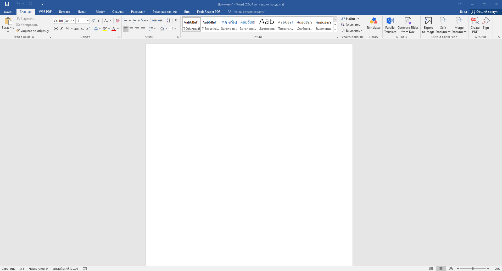

Word
Справочник по текстовому процессору Microsoft Word. Темы идут в том порядке, в котором встречаются в практических заданиях. Каждая тема — короткая карточка: команды, горячие клавиши, ошибки и чек-лист.
Не читайте всё подряд. Откройте нужную тему через оглавление справа или найдите нужное сочетание клавиш поиском по странице (Ctrl+F).
Интерфейс и документ
Прежде чем что-то набирать — надо понять, где что находится. Основная работа идёт через вкладки Главная и Вставка.

- Главная — шрифт, абзац, стили, буфер обмена
- Вставка — таблицы, рисунки, символы, формулы, колонтитулы
- Ссылки — оглавление, сноски
- Вид — режимы отображения, масштаб
- Ctrl+N — новый документ
- Ctrl+S — сохранить
- Ctrl+Z — отменить действие
- F7 — проверка орфографии
- Ctrl+F — поиск по тексту
- Забыли сохранить под нужным именем — работа потерялась.
- Работают в режиме «Черновик», а нужно — «Разметка страницы».
- Масштаб не тот, что просили в задании.
- Документ открыт, режим — Разметка страницы
- Масштаб соответствует заданию
- Файл сохранён под правильным именем
Шрифт и абзац
Форматирование символов и абзацев — база. Если делать его вручную для каждого абзаца, работа займёт часы. Используйте стили (см. следующую тему).
- Шрифт — Главная → Шрифт или Ctrl+D
- Абзац — Главная → Абзац или правый клик → Абзац
- Линейка — Вид → Линейка
- Ctrl+B — жирный
- Ctrl+I — курсив
- Ctrl+U — подчёркнутый
- Ctrl+E — по центру
- Ctrl+L / R / J — по левому / правому / ширине
- Отступ сделан пробелами, а не параметром «Первая строка».
- Пустая строка вместо интервала «после абзаца».
- Разрыв строки (Shift+Enter) вместо нового абзаца.
- Гарнитура и кегль как в задании
- Отступ первой строки — через Абзац
- Интервалы — через Абзац, а не пустыми строками
Стили и оглавление
Стиль — это сохранённый набор параметров форматирования. Стили заголовков — единственный способ сделать автоматическое оглавление.
- Применить стиль — Главная → Стили
- Изменить стиль — правый клик по стилю → Изменить
- Вставить оглавление — Ссылки → Оглавление
- Обновить оглавление — F9 или правый клик → Обновить поле
- Заголовки оформлены «жирным», а не стилем Заголовок 1.
- Оглавление вставлено как текст, а не как поле.
- Перед сдачей забыли обновить оглавление (F9).
- Все заголовки — стилями Заголовок 1/2/3
- Оглавление собрано автоматически
- Номера страниц в оглавлении совпадают с реальными
Страница и колонтитулы
Параметры страницы задаются до набора текста. Иначе после смены полей всё «съедет».
- Поля, ориентация — Макет → Параметры страницы
- Размер бумаги — там же
- Колонтитулы — Вставка → Верхний / Нижний колонтитул
- Номер страницы — Вставка → Номер страницы
- Разрыв страницы — Ctrl+Enter
- Разрыв страницы — пустыми строками вместо Ctrl+Enter.
- Номер страницы на титульном листе.
- Колонтитул на одной странице вместо всех.
- Поля и ориентация как в задании
- Нумерация — снизу по центру (или как в задании)
- Колонтитул присутствует на всех нужных страницах
Списки
Нумерованные, маркированные, многоуровневые. Оформляются кнопками на вкладке Главная.
- Маркированный — Главная → Маркеры
- Нумерованный — Главная → Нумерация
- Многоуровневый — Главная → Многоуровневый список
- Изменить уровень — Tab / Shift+Tab
- Нумерация вручную цифрами и точками.
- Список вставлен как таблица из одной колонки.
- Отступы — пробелами, а не уровнем списка.
- Список оформлен кнопкой Нумерация
- Уровни — через Tab
- Стиль маркера соответствует образцу
Таблицы
Таблицы нужны не только для данных, но и для «ровной» вёрстки — например, для титульного листа.
- Вставить — Вставка → Таблица
- Объединить ячейки — выделить → правый клик → Объединить
- Разбить ячейку — правый клик → Разбить ячейки
- Формула — Макет → Формула
- Таблица нарисована линиями/подчёркиваниями, а не вставлена.
- Столбцы «пляшут» из-за ручной ширины.
- Сумма в таблице посчитана в голове, а не формулой
=SUM(ABOVE).
- Таблица вставлена через Вставка → Таблица
- Объединения и разбиения ячеек соответствуют образцу
- Итоги — через формулу, а не «руками»
Рисунки и объекты
Рисунки, буквица, WordArt, вставка из файла. Главный параметр — обтекание текстом.
- Рисунок — Вставка → Рисунок
- Обтекание — выделить рисунок → Формат → Обтекание текстом
- Буквица — Вставка → Буквица
- WordArt — Вставка → WordArt
- Рамка — Дизайн → Границы страниц
- Рисунок «сдвигает» текст, потому что обтекание не задано.
- Рамка не на всю страницу, а на один абзац.
- Буквица выходит за пределы первой строки.
- У рисунка задано обтекание
- Рамка охватывает всю страницу
- Буквица ровно в начале абзаца
Колонки
Газетная вёрстка в Word: несколько колонок на одной странице с разделительной линией или без.
- Разбить на колонки — Макет → Колонки
- Разделитель — Макет → Колонки → Другие колонки → Разделитель
- Применить к абзацу — выделить абзац и задать колонки
- Колонки применяются ко всему документу вместо одного абзаца.
- Абзац «уезжает» в конец документа из-за разрывов.
- Колонки — только на нужном абзаце
- Разделитель включён, если требуется
- Ширина колонок одинаковая
Формулы
Формулы в Word вставляются через встроенный редактор Microsoft Equation. Внешне это похоже на конструктор: выбираешь шаблон дроби, степени, корня — и заполняешь его.
- Вставка → Уравнение (или Alt+=)
- Или Вставка → Объект → Microsoft Equation 3.0
- Простые символы — Вставка → Символ
- Набрали формулу «по буквам», без редактора — она кривая.
- Использовали не тот регистр индексов (x vs X).
- Формула как картинка — не редактируется.
- Формула вставлена через редактор
- Все дроби, корни, индексы — как в задании
- Формула открывается на редактирование двойным кликом
Макросы
Макрос — записанная последовательность действий. Полезен, если одну и ту же операцию надо повторять много раз.
- Вид → Макросы → Запись макроса
- Задать имя и (по желанию) сочетание клавиш
- Выполнить действия, которые нужно записать
- Вид → Макросы → Остановить запись
- Alt+F8 — список макросов
- Alt+F11 — редактор Visual Basic
- Макрос записан, но не сохранён в документе.
- Клавиатурное сочетание пересекается с системным.
- В макрос попали лишние действия (перемещение курсора).
- Макрос записан, назначено сочетание клавиш
- Работает в вашем файле
- Файл сохранён как
.docm, если макрос должен остаться